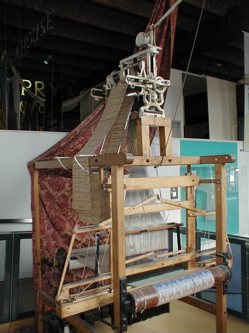

Teoría 101
Computadores y Lenguajes
La informática es ubicua
- PCs
- Supercomputadoras
- Smartphones
- Electrodomésticos
- Cajeros automáticos
- Consolas
- Robots
- …

300-500 a.C.: El Ábaco
- Primer dispositivo de cálculo conocido
- Utilizado para realizar operaciones básicas como suma y resta
- Base para el desarrollo de herramientas más complejas

Siglo II a.C.: Máquina de Anticitera
- Primer mecanismo conocido de engranajes complejos
- Utilizado para predecir posiciones astronómicas y eclipses
- Introducción de conceptos de cálculo mecánico en la astronomía

Siglo XVII: La Pascalina de Blaise Pascal
- Primer calculador mecánico funcional
- Utilizaba ruedas dentadas para realizar sumas y restas
- Inspiró futuros dispositivos de cálculo automatizado

Siglo XIX: El Telar de Jacquard
- Introducción de tarjetas perforadas para controlar patrones en telares
- Base conceptual para la programación mediante instrucciones predefinidas
- Influencia directa en los diseños de máquinas computacionales posteriores
 

Década de 1840: Ada Lovelace
- Reconocida como la primera programadora
- Escribió el primer algoritmo diseñado para ejecutarse en la Máquina Analítica
- Identificó el potencial de las máquinas más allá del cálculo numérico

1939-1940: Z3
- Diseñada por Konrad Zuse en 1941
- Primera computadora electromecánica programable
- Utilizaba relés electromeánicos
- Usada para ayudar en cálculos de ingeniería

Década de 1943-1944: Colossus
- Diseñada por Tommy Flowers y el equipo de Bletchley Park
- Primera computadora digital electrónica
- Utilizaba tubos de vacío (muchísimo más rápidos que los relés)
- Usada para descifrar códigos de la máquina Lorenz alemana
- Ligeramente programable, pero no de propósito general

1945: ENIAC
- Primera computadora electrónica de propósito general
- Capaz de realizar 5,000 operaciones por segundo
- Usaba tubos de vacío, ocupaba una sala entera

Década de 1950: EDVAC
- Introducción del concepto de programa almacenado
- Evolución significativa respecto al ENIAC, más eficiente y versátil
- Datos y programas residían en la misma memoria

Modelo de Von Neumann

Modelo Von Neumann
Partes de un Computador

Partes de un Computador